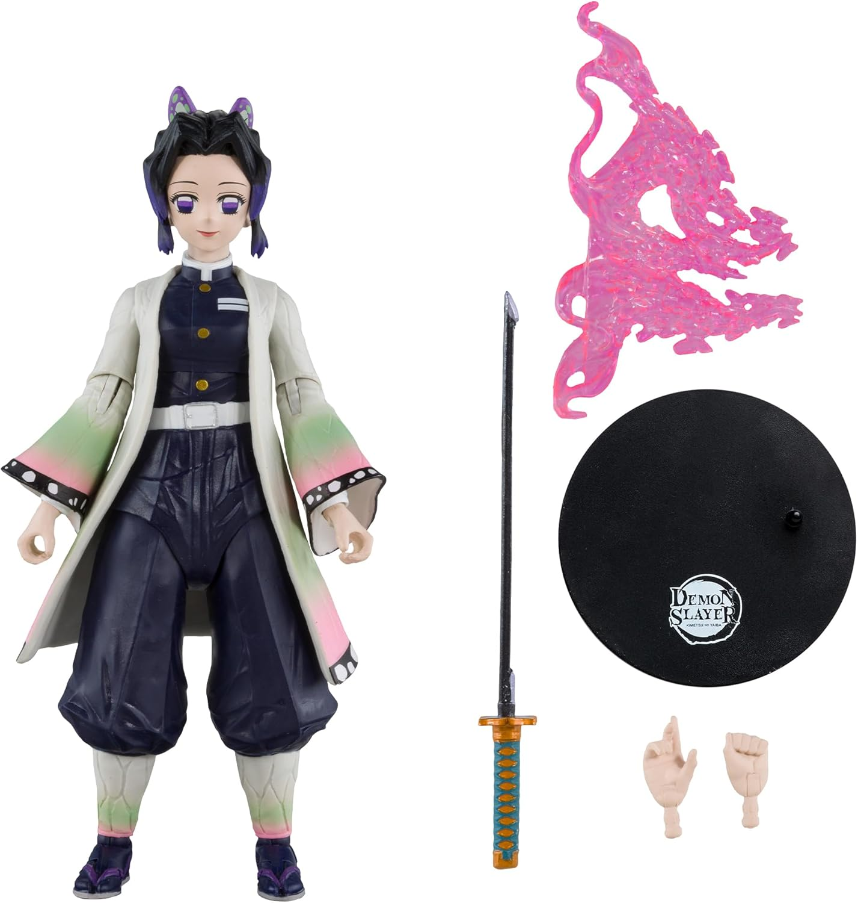

Recensione McFarlane Toys Demon Slayer Shinobu Kocho 7 pollici: la mia opinione dopo averla presa

Quando ho deciso di comprare la McFarlane Toys Demon Slayer Shinobu Kocho 7 pollici Action Figure, l’ho fatto con aspettative abbastanza alte. Shinobu non è uno di quei personaggi che puoi rendere bene “più o meno”. O catturi davvero la sua eleganza, quel suo modo unico di sembrare calma e letale allo stesso tempo, oppure il risultato rischia di sembrare una figure anime qualsiasi con colori carini. Dopo averla ricevuta e guardata da vicino, posso dire che questa figure mi ha dato proprio quella sensazione che cercavo: sembra davvero pensata da qualcuno che ha capito perché Shinobu Kocho piace così tanto ai fan di Demon Slayer.
Prime impressioni appena aperta
La prima cosa che mi ha colpito è stata la presenza scenica. Anche prima di tirarla fuori del tutto dalla confezione, la figure fa una bella impressione. La scatola a tema Demon Slayer con finestra è molto curata e, da collezionista, per me è un dettaglio che conta. Non è il classico packaging buttato lì tanto per accompagnare il prodotto: ha un look che valorizza subito il personaggio.
Una volta aperta, la sensazione è stata positiva quasi immediatamente. La figure ha quel mix che io cerco sempre in una action figure Shinobu Kocho: bellezza visiva, personalità e voglia di metterla subito in posa.
Dettagli estetici: Shinobu si riconosce subito
La cosa più importante, per me, era una sola: doveva sembrare davvero Shinobu. E qui, onestamente, McFarlane ha fatto un lavoro che mi ha soddisfatto. Il personaggio è riconoscibile subito, senza doverlo “giustificare” da fan. Non serve guardarla e dire “vabbè, dai, ci siamo quasi”. No. La guardi e pensi: sì, è lei.
Quello che apprezzo di più è il fatto che abbiano cercato di mantenere quell’eleganza visiva tipica del personaggio. Shinobu non è fatta per apparire pesante o brutale. Deve sembrare raffinata, veloce, precisa. Questa figure restituisce abbastanza bene proprio quella sensazione. Da vicino si percepisce che è stata pensata come una figure da collezione Demon Slayer, non come un giocattolo generico.
Articolazione: il vero punto forte della figure
Una delle ragioni principali per cui l’ho scelta era la promessa della ultra articolazione fino a 22 parti mobili, e devo dire che è uno degli aspetti che mi ha convinto di più dopo l’acquisto. Se ami cambiare pose alle figure o vuoi qualcosa di più vivo rispetto a una statica classica, qui ti diverti davvero.
Nel caso di Shinobu, questa cosa funziona particolarmente bene perché il personaggio si presta a pose dinamiche ma anche eleganti. Non è una figure che devi per forza esporre in modo esagerato. Puoi metterla in una posa da combattimento, ma anche in una posizione più composta, quasi sospesa, e continua a funzionare.
Per me questa è stata una sorpresa molto piacevole, perché non tutte le figure articolate riescono a mantenere una bella linea visiva. Qui invece il compromesso tra mobilità e resa da esposizione è abbastanza riuscito. Se stai cercando una Shinobu Kocho action figure articolata, questa è una delle caratteristiche che ti fa capire perché il prodotto abbia un certo appeal.
Accessori inclusi: utili, non messi lì a caso
Dentro la confezione trovi mani extra, spada ed effetto fiamma da attaccare alla spada. Sulla carta sembrano accessori normali, ma dal vivo fanno la differenza. Le mani extra aiutano molto a cambiare l’espressione generale della posa. La spada, ovviamente, era fondamentale. L’effetto aggiuntivo, invece, è quel dettaglio che rende l’esposizione più scenografica.
La cosa che mi è piaciuta è che non ho avuto la sensazione di trovarmi davanti a una figure “vuota” con qualche pezzo infilato tanto per far numero. Gli accessori qui servono davvero a valorizzare Shinobu in versione Hashira in azione. Se ami creare piccole scene o cambiare setup ogni tanto, sono un plus reale.
Com’è esposta in collezione
Una volta sistemata sullo scaffale, questa McFarlane Toys Shinobu Kocho regge bene la vista anche accanto ad altre figure anime. Questo, per me, è sempre il test finale. Ci sono prodotti che in foto sembrano incredibili e poi dal vivo si perdono. Qui invece la figure ha una sua identità chiara.
Quello che mi piace è che non ha bisogno di essere enorme o super rumorosa per farsi notare. Shinobu ha già di suo un design molto forte, e questa figure riesce a sfruttarlo. In mezzo ad altri personaggi di Demon Slayer, funziona molto bene perché porta una presenza più elegante e meno aggressiva. Se invece la esponi da sola, resta comunque molto gradevole da guardare.
Vale il prezzo?
Qui bisogna essere onesti. 114,64 euro non sono pochi. Non è una figure da comprare a cuor leggero solo perché “mi piace il personaggio”. Però, da persona che l’ha presa e che ama sia Demon Slayer sia le action figure ben fatte, posso dire che la spesa ha senso se cerchi proprio questo tipo di prodotto.
Non la vedo come un acquisto per chi vuole semplicemente una statuetta di Shinobu da mettere lì e basta. La vedo più come una figure per chi vuole una Shinobu Kocho figure da collezione, una figure articolata e non rigida, accessori che aggiungano davvero qualcosa e un prodotto con una bella presenza da esposizione.
Se rientri in questo tipo di pubblico, secondo me il prezzo si capisce di più. Se invece cerchi solo un oggetto più semplice o più economico, allora probabilmente non è la soluzione più adatta.
Cosa mi è piaciuto di più
La cosa che mi ha convinto più di tutto è che questa figure mi ha trasmesso subito il personaggio. Non è perfetta nel senso assoluto del termine, ma ha abbastanza personalità da farmi essere contento dell’acquisto. E da fan, per me è quello che conta davvero.
Mi sono piaciuti soprattutto:
La posabilità
È la caratteristica che cambia
davvero l’esperienza. Puoi divertirti, puoi sperimentare, puoi adattarla al tuo stile di esposizione.
Il
feeling da figure collezionabile
Non dà l’idea di essere un prodotto frettoloso. Ha un’impostazione pensata
per chi colleziona davvero.
Gli accessori
Sono abbastanza da rendere il tutto più interessante
senza appesantire inutilmente la confezione.
Il look generale
Shinobu mantiene quella sua
immagine elegante, sottile e affascinante che i fan cercano.
A chi la consiglierei
Io la consiglierei soprattutto a tre tipi di persone: ai fan di Shinobu, a chi colleziona personaggi di Kimetsu no Yaiba e a chi ama le action figure articolate con una bella resa da scaffale. Se appartieni a una di queste categorie, questa figure riesce davvero a dare soddisfazione.
La consiglierei meno a chi preferisce figure statiche molto pulite o a chi vuole semplicemente il prodotto più economico possibile sul personaggio.
Recensione finale
Dopo aver comprato la McFarlane Toys - Demon Slayer Shinobu Kocho 7 pollici Action Figure, posso dire che per me è stata una bella aggiunta alla collezione. La cosa che mi ha convinto non è solo il fatto che sia una figure dettagliata, ma che riesca a restituire abbastanza bene lo spirito del personaggio. Shinobu non è facile da rappresentare, e proprio per questo una figure che funziona davvero si nota subito.
Tra articolazione, accessori, confezione curata e buona resa scenica, questo prodotto riesce a ritagliarsi uno spazio interessante tra le figure dedicate a Demon Slayer. Non è una scelta casuale, ma per chi ama davvero il personaggio può essere una figure che dà soddisfazione ogni volta che la guardi sullo scaffale.
Se dovessi riassumerla in modo semplice, direi questo: come fan di Shinobu, l’ho comprata sperando in una figure bella da vedere. Dopo averla ricevuta, mi sono ritrovato con una figure che oltre a essere bella riesce anche a farsi apprezzare ogni volta che cambio posa o mi fermo a guardarla meglio. Ed è proprio questo che, secondo me, dovrebbe fare una buona action figure Shinobu Kocho Demon Slayer.